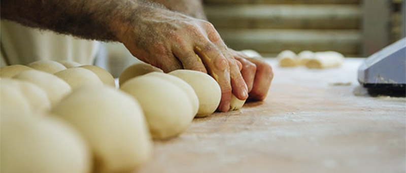

מערבבים את הקמח עם הסוכר והמלח, לאחר מכן מוסיפים את השמרים. מוסיפים מים מעט חמימים ומתחילים ללוש. מוסיפים את השמן ולשים עד לבצק אחיד ונעים. מכסים ונותנים לו חצי שעה לתפוח. אחרי חצי שעה לשים שוב ומחכים חצי שעה נוספת. הבצק מוכן, זה הזמן ליצור עיגולים קטנים ולמרוח עליהם ביצה ושומשום. מחכים כמה דקות שהלחמניות יתפחו, ומכניסים לתנור ל20 דקות בחום של 200 מעלות.
